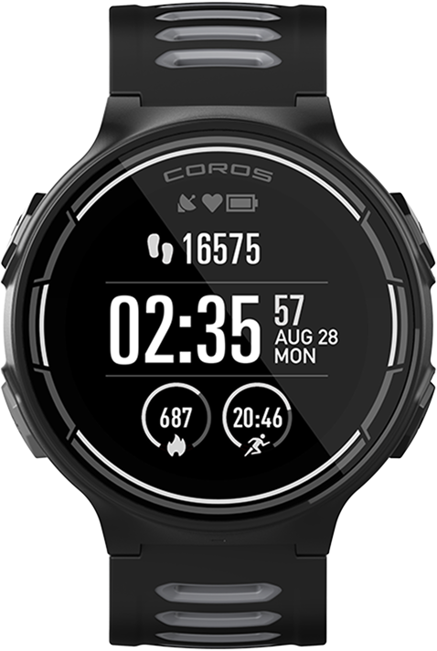
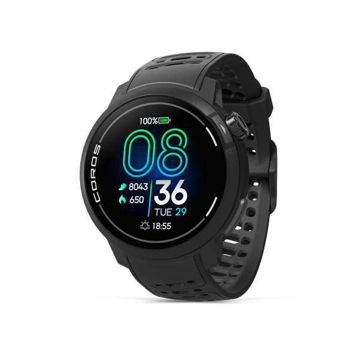
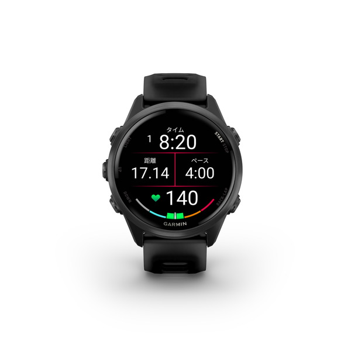
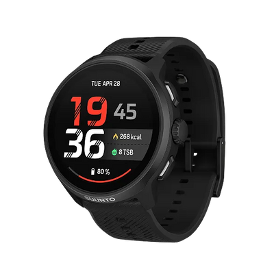
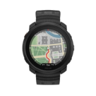
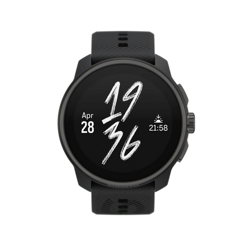
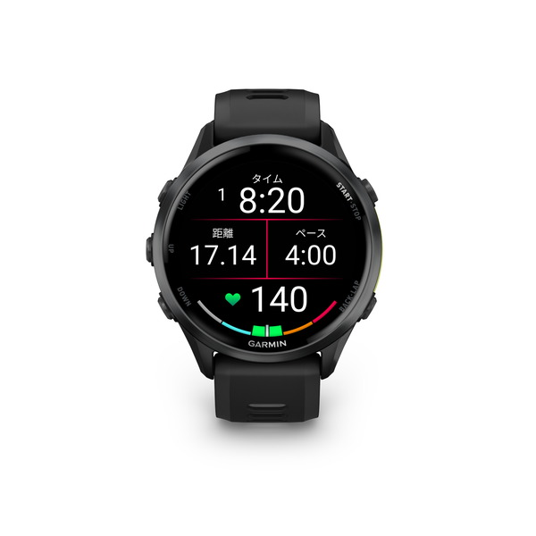
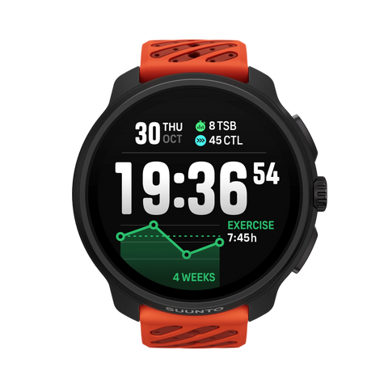

ランニング向けスマートウォッチ8機種を比較｜軽さ・GPS電池持ち・地図で選ぶ
最初の1台も、マラソンに向けた買い替えも。まずは「手首に載せる重さ」と「走っている間の記録時間」から、候補を絞ってみませんか。
広告 この記事にはアフィリエイトリンクが含まれます。Amazonのアソシエイトとして、暮らしアップは適格販売により収入を得ています。
この記事は実機の使用レビューではありません。メーカー公式の製品ページ・取扱説明書・サポート情報を調べて作成しています。最新機種の網羅や順位付けを目的とせず、重量・記録時間・地図機能の違いを比較できる8機種を選びました。
ランニング初心者なら、機能の数より「普段の練習で使い続けられるか」から考えると選びやすくなります。軽さを優先するならCOROS PACE 4やForerunner 570 42mm、時計で地図も見たいならPACE Pro・Run 2・Vantage M3などが候補です。長時間の記録を優先する場合は、Race 2も比べてみてください。
どの機種でも、まずは自分のペース・距離・心拍を見ながら練習を記録する使い方が基本。そこに地図、練習支援、Suicaなど「自分が使う機能」を足していくと、必要以上に大きい時計や、使わない機能への出費を避けやすくなります。
画像で比較｜軽さとGPS記録時間の2軸マップ
左にあるほど軽く、上にあるほど高精度GPSモードの公称記録時間が長い配置です。黒い点が仕様上の位置で、見やすく離した商品画像とは線で結んでいます。画像・機種名を押すと詳細へ移動します。
横軸：バンド込み重量（g）。縦軸：デュアル周波数／マルチバンドを使う各社の高精度GPSモードの公称稼働時間（時間）。区切りは50g・30時間の目安です。スマートフォンでは図を左右にスクロールできます。
数字の読み方
同じメーカー内でも「GPS単独」「自動選択」「マルチバンド」「音楽再生あり」では時間が変わります。今回は高精度側のモードを採用しましたが、各社の心拍・画面・通知などの試験条件は完全には一致しません。実際の電池持ちや測位精度の優劣を示す実測グラフではありません。
重量は掲載仕様のバンド込み。COROSはシリコン、Garmin 570は42mm、Suunto Race S／Race 2はステンレス仕様です。写真は各メーカーの商品画像を使用し、全機種を同じ縮尺では表示していません。
図の4エリアから、自分の使い方を考える
4つのエリアは優劣ではありません。30時間・50gの境界近くにある機種は、少しの数字の差よりも、地図や練習支援の使い方を比べてください。
軽さと長時間記録を両方求める人
長い練習にも使いつつ、普段や睡眠中にも着けたいなら、このエリアを起点にします。
- COROS PACE 4：40g・最大31時間。
- COROS PACE Pro：49g・最大31時間。画面は1.3インチ。
表示や地図も見ながら、長く記録したい人
本体が大きくなることを許容できるなら、画面サイズや記録時間にも選択肢が広がります。
- POLAR Vantage M3：53g・最大30時間。負荷の振り返りも重視。
- SUUNTO Race S：60g・最大30時間。45mmの地図対応機。
- SUUNTO Race 2：76g・最大55時間。長時間の記録が優先。
小さめの本体で、日々の練習と生活に使う人
今回ここに入るのはForerunner 570 42mm。GPS時間に余裕が足りるかを確かめたうえで、練習支援や日常機能を選びます。
- GARMIN Forerunner 570 42mm：42g・約13時間。Suica・音楽保存・練習支援が選ぶ理由に。
記録時間だけでなく、欲しい機能で選ぶ人
走る時間に対して十分な余裕があるなら、地図やレース中の表示、日常での使い方を比べます。
- SUUNTO Run 2：53g・約24時間。マラソン向け表示と地図・音楽。
- GARMIN Forerunner 970：56g・約21時間。Garminの地図・練習支援・Suica。
境界の30時間は上側に含めています。エリアごとに機種数を揃えるための位置調整は行っていません。
地図・練習支援まで含めて機能を比較
| メーカー・機種／掲載仕様 | 重量 | 高精度GPS公称時間・モード | 時計本体の地図 | 着目する特徴 |
|---|---|---|---|---|
| COROS PACE 4シリコン／43.4mm | 40g | 最大31時間Dual Frequency / Max（常時表示OFF） | オフライン地図対応※ | 軽さと記録時間を両立 |
| COROS PACE Proシリコン／46mm | 49g | 最大31時間Dual Frequency / Max（常時表示OFF） | オフライン地図対応 | 1.3インチAMOLED・地図 |
| GARMIN Forerunner 570 42mmシリコン／42.4mm | 42g | 最大13時間マルチGNSSマルチバンドモード | コース線表示／地図非搭載 | 練習支援・Suica |
| SUUNTO Run 2公式シリコン／公式製品情報を参照 | 53g | 最大24時間全衛星・デュアル周波数GPS | オフライン地図対応 | マラソン向け表示・音楽保存 |
| POLAR Vantage M3標準バンド／44.7mm | 53g | 最大30時間Performance training（デュアル周波数GPS・光学心拍・1秒記録） | オフライン地図対応 | Training Load Pro・回復の振り返り |
| SUUNTO Race Sシリコン／ステンレス仕様／45mm | 60g | 最大30時間All-Systems GNSS + Multi-Band | オフライン地図対応 | 45mm・地図と練習分析 |
| GARMIN Forerunner 970シリコン／47mm | 56g | 最大21時間マルチGNSSマルチバンドモード | フルカラー地図内蔵 | 地図・練習分析・LEDライト |
| SUUNTO Race 2シリコン／ステンレス仕様／49mm | 76g | 最大55時間All-Systems GNSS + Multi-Band／Performance | オフライン地図対応 | 1.5インチ・長時間記録 |
※PACE 4の地図対応は確認時点の公式サポートに基づきます。最新ソフトウェアと事前の地図取得が必要です。掲載機能は代表例で、これ以外の機能がないことを意味しません。Run 2のリンク先はAll Blackの4GBモデルです。
8機種の特徴と、向いている使い方

COROS PACE 4
軽い時計で、長い練習も記録したい人に。
シリコンバンド込み40g、デュアル周波数モードで最大31時間という組み合わせが特徴です。日常のジョグに加えて、長めの練習を記録する用途でも候補になります。ナイロンバンドなら32gですが、この図では他機種と比べるためシリコン仕様を採用しています。
確認時点の公式サポートでは、PACE 4もオフライン地図・道路名・POIの対応機種に含まれます。購入直後のソフトウェアが古い場合は、更新と地図のダウンロードを先に済ませてください。
購入前に確認：同じPACEでもPACE Proとは別製品。画面サイズや本体寸法も比較してください。
COROS公式の製品仕様を見る · 確認日：2026年11月11日

COROS PACE Pro
地図と画面サイズも確保したい人に。
1.3インチAMOLEDとオフライン地図を搭載。シリコンバンド込み49gで、デュアル周波数モードの公称時間は最大31時間です。PACE 4と同じ31時間でも、本体サイズと表示面積に違いがあるため、数字だけで選ばず手首に載せた大きさも確認したいモデルです。
ナイロンバンドでは37gになります。軽さの印象が大きく変わるため、購入するバンドと図の仕様を取り違えないようにしてください。地図の利用には事前のダウンロードが必要です。
購入前に確認：PACE 4より必ず記録時間が長いわけではありません。今回のデュアル周波数モードでは同じ公称値です。
COROS公式の製品仕様を見る · 確認日：2026年11月11日

GARMIN Forerunner 570 42mm
小さめの本体で、練習と日常の便利さをまとめたい人に。
42mmモデルはバンド込み42g。Garmin Coachやトレーニングレディネスなどの練習支援に加え、Suica、音楽保存、マイクとスピーカーを備えています。ジョグの記録だけでなく、練習の計画や日々の使い道まで広げたいときの候補です。
あらかじめ送ったコースを線で表示できますが、道路や地形を描いたフルカラー地図は搭載していません。地図を時計で見たいなら、同じGarminの970と比較すると役割の違いがわかります。
購入前に確認：図は42mm・マルチバンド約13時間。47mmモデルやGPS単独モードの数字と混ぜないでください。通話は互換スマートフォンとの接続が必要です。
GARMIN公式の製品仕様を見る · 確認日：2026年11月11日

SUUNTO Run 2
マラソン向けの表示と地図・音楽をまとめたい人に。
マラソンの予想到着時間や目標ペースに関する表示に加え、オフライン地図と音楽保存に対応するモデルです。公称稼働時間は全衛星・デュアル周波数GPSで約24時間。走行データを記録しながら、レース中に確認したい情報を重視する人の候補になります。
公式紹介の「35g」は本体のみの重量です。公式シリコンバンドを含めると53gになるため、図も53gの位置に置きました。仕様の調査には米国公式ページを参照しています。Amazonボタンのリンク先はAll Blackの4GBモデルです。保証や販売条件は購入先で確認してください。
購入前に確認：RunとRun 2は別製品です。ストレージにも複数仕様があるため、購入時はモデル名と容量を確認してください。
SUUNTO公式の製品仕様を見る · 確認日：2026年11月11日

POLAR Vantage M3
練習の負荷と回復を、続けて振り返りたい人に。
Training Load Proで練習負荷を追い、睡眠や回復に関する情報とあわせて振り返る使い方ができます。バンド込み53gで、デュアル周波数GPSと光学心拍を使うPerformance training modeは最大30時間。オフライン地図にも対応しています。
同じ53gのRun 2と比べるなら、予想到着時間など走行中の表示を重視するか、Polar Flowで負荷を継続して振り返る運用を重視するかが一つの選び方です。これは用途に基づく編集上の提案です。
購入前に確認：負荷や回復の指標は推定です。時計の数値だけで、その日に練習を増やすかどうかを決めるものではありません。
POLAR公式の製品仕様を見る · 確認日：2026年11月11日

SUUNTO Race S
Race 2より小さめの本体で地図も使いたい人に。
45mmケースに1.32インチAMOLEDとオフライン地図を備えるモデルです。図はステンレス仕様のバンド込み60g、全衛星・マルチバンドで最大30時間。大きなRace 2と比べ、時計のサイズと記録時間のどちらを優先するかで絞れます。
トレーニングの負荷や回復の分析も利用できます。初めての道を走る際には、地図とコースを事前に準備する使い方を想定してください。地図表示だけで自動的に最適ルートが作られるとは限りません。
購入前に確認：チタン仕様は53gで、今回の図の60gとは異なります。後継機を含むシリーズ全体の比較ではなく、ここではRace Sのステンレス仕様を対象にしています。
SUUNTO公式の製品仕様を見る · 確認日：2026年11月11日

GARMIN Forerunner 970
地図も、Garminの練習支援もまとめて使いたい人に。
フルカラー地図、サファイアレンズ、LEDフラッシュライトを備えたモデルです。570と比べると、地図を時計本体で確認できることが大きな違い。Suicaや音楽保存も含め、練習から日常まで機能をまとめたい人の候補です。
バンド込み56g、マルチバンドモードでは約21時間です。GPS単独の約26時間とは条件が異なります。ランニングエコノミーなど一部の分析には、別売のHRM 600が必要になる点も購入前に確認してください。
購入前に確認：高機能でも図の最上部には来ません。この図が示すのは重量と公称記録時間で、総合性能の順位ではありません。
GARMIN公式の製品仕様を見る · 確認日：2026年11月11日

SUUNTO Race 2
長時間の記録と、大きめの表示を優先する人に。
全衛星・マルチバンドのPerformanceモードで最大55時間。今回の8機種では、掲載した高精度モードの公称時間が最も長いモデルです。1.5インチAMOLEDとオフライン地図を備え、長い行程で記録時間を確保したい人の候補になります。
一方、ステンレス仕様はバンド込み76g、ケース径49mm。細い手首や睡眠中の装着まで考える場合は、Race Sや他の小さめの機種と実物で大きさを比べてください。掲載写真はCoral Orangeのステンレス仕様です。
購入前に確認：公称55時間はそのまま実走を保証する数字ではありません。必要な記録時間に余裕を持たせ、使う設定で消費を確認してください。
掲載画像はCoral Orangeですが、Amazonリンク先はAll Blackのステンレス仕様です。
SUUNTO公式の製品仕様を見る · 確認日：2026年11月11日
購入前に確認する4つのこと
1. 普段走る時間と、最長の予定時間
週の練習が1時間前後なのか、長時間の大会も予定しているのかで、必要な記録時間は変わります。大会では待機や移動、コース上の遅れもあるため、公称時間ぎりぎりで選ぶより余裕を残します。音楽再生や常時表示を使うなら、その条件の稼働時間を公式説明書で確認してください。
2. 「コース線」と「地図」を分けて考える
コース線表示は、事前に送ったルートを線として追う機能。オフライン地図は、周囲の道路や地形も時計の画面で確認するためのものです。いつもの道を走るなら地図の出番は少なくても、旅行先や知らない道では選ぶ理由になります。地図があることと、時計がその場でルートを作り直せることも別なので、必要な案内機能まで確認します。
3. 本体だけの重量と、バンド込みの重量
「35g」と「53g」が、実は同じ時計の本体のみ／バンド込みを指すことがあります。比較するときは同じ条件に揃え、ケース径や厚さ、バンドの調整幅も見てください。軽い機種でも手首への収まりが合わない場合があるため、試着できるならボタンの押しやすさまで確かめます。
4. 日常機能とスマートフォンの組み合わせ
通知表示、時計からの通話、電子決済、音楽保存は、それぞれ別の機能です。スマートフォン側の音楽を操作できても、時計に曲を保存できるとは限りません。Suicaを使いたいならGarminの対応機種、音声通話も必要ならスマートフォンとの接続条件、音楽配信サービスを使いたいなら対応サービスと契約条件を確かめてください。
この記事で比較した8機種はランニングなどの運動を軸にした時計です。アプリの追加やスマートフォンを置いた単独通話を最優先する場合は、それらの条件を満たす別のスマートウォッチも含めて比較すると選びやすくなります。
ランニングウォッチ選びのよくある疑問
初心者にも高機能な時計は必要？
まず使うのが距離・ペース・心拍の記録なら、最上位機に限定する必要はありません。今回の図で重量と記録時間を見てから、地図や練習支援など、自分が使う機能に絞って比較してください。
高精度GPSモードなら、必ず距離が正確？
デュアル周波数／マルチバンドは測位に使う仕組みの一つです。ビル、木々、天候や装着・受信状態などでも記録は変わり、今回の公称稼働時間から距離やペースの精度順位は判断できません。
スマートフォンなしでも走行記録はできる？
掲載した8機種はいずれも衛星測位に対応し、時計で走行を記録できます。ただし初期設定、記録の同期、地図や音楽の準備、通知・通話などにはアプリやスマートフォン、ネット接続が必要になる場合があります。
まとめ｜走る時間を決めてから、使う機能を足す
軽さと記録時間ならPACE 4／PACE Pro。小さめのGarminなら570 42mm。地図・分析・表示の使い方で、残る5機種を絞る。
Vantage M3は負荷の振り返り、Run 2はマラソン向けの表示と地図・音楽、Race Sは45mmの地図対応機として比較できます。Garminの地図と日常機能をまとめるなら970、長時間の記録を優先するならRace 2が候補です。最後は、手首への収まりと、アプリで練習記録を見返しやすいかまで確認して決めましょう。
走る道具を揃えるなら、ロード用ランニングシューズ12足の比較記事もあわせてご覧ください。